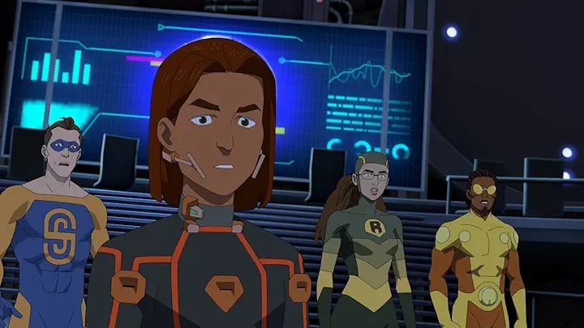
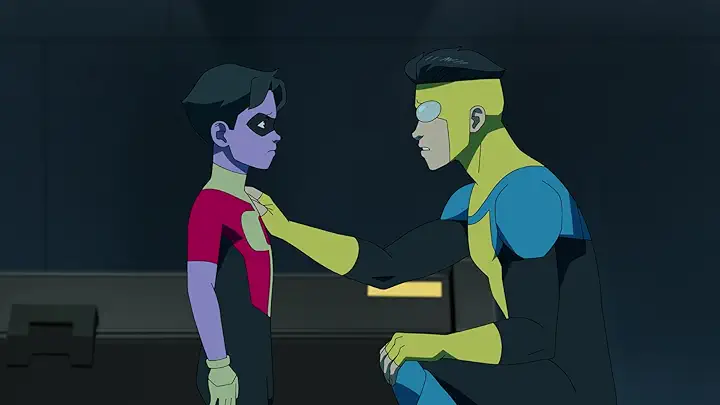

Temporada 1
Mark Grayson, de 17 años, es como cualquier otro chico de su edad, excepto que su padre es Omni-Man, el superhéroe más poderoso del planeta. Pero a medida que Mark desarrolla sus propios poderes, descubre que el legado de su padre puede no ser tan heroico como parece.
Temporada 2
Tras la traición de su padre, Mark lucha por reconstruir su vida y redefinir su identidad como héroe. Mientras enfrenta nuevas amenazas, tanto en la Tierra como en el espacio, debe lidiar con el miedo de convertirse en el mismo monstruo que su padre fue.
Temporada 3
La historia continúa. La temporada 3 explorará las consecuencias de los eventos de la temporada 2 y presentará a nuevos y peligrosos villanos, llevando a Mark a sus límites.
-
T1 E1 - Ya era hora
25 de marzo de 2021 51 min
Es un sueño hecho realidad cuando Mark Grayson finalmente hereda los poderes de su padre superhéroe, pero para ser un héroe se necesita más que sólo escoger un nombre y un traje.
-
T1 E2 - Aquí vamos
25 de marzo de 2021 48 min
Con su padre fuera de combate, Mark apenas puede defender la ciudad de una invasión interdimensional, por lo que une fuerzas con un grupo de superhéroes adolescentes.
-
T1 E3 - ¿A quién llamas feo?
25 de marzo de 2021 45 min
Mark tiene que interrumpir su cita de estudio para salvar el monte Rushmore de un ciéntifico loco. Robot lidia con el drama que implica reuinir a un nuevo equipo capaz de salvar al mundo.
-
T1 E4 - Neil Armstrong, muérete de envidia
1 de abril de 2021 48 min
Dos experiencias nuevas para Mark: su primera cita y su primer viaje a otro planeta. Al mismo tiempo, Nolan y Debbie reviven sus primeras vacaciones juntos.
-
T1 E5 - Eso me dolió
8 de abril de 2021 50 min
Confiado con sus nuevas habilidades, Mark une fuerzas con un aliado peligroso para derrotar a un jefe criminal, mientras que busca el balance entre la escuela y su nueva relación.
-
T1 E6 - Te ves casi muerto
15 de abril de 2021 48 min
Mark acompaña a William y Amber a una vistia al campus de la Universidad del Norte con la esperanza de descubrir un nuevo futuro para él. Debbie realiza un descubrimiento macabro.
-
T1 E7 - Tenemos que hablar
22 de abril de 2021 52 min
Mark se siente perdido y confundido, así que busca a Eve para que lo aconseje. Al mismo tiempo, todos lo están buscando.
-
T1 E8 - Mi verdadero origen
29 de abril de 2021 48 min
Mark debe demostrar que se ha convertido en el héroe que siempre soñó al detener una fuerza imparable.
-
T2 E1 - Una lección para tu próxima vida
2 de noviembre de 2023 49 min
Después de la traición de su padre, Mark tiene problemas con sus responsabilidades como Invincible y conoce a un enemigo inesperado.
-
T2 E2 - En seis horas voy a perder mi virginidad con un pez
9 de noviembre de 2023 50 min
Llegan las vacaciones de verano para Mark y sus amigos, pero los supervillanos no descansan. Mark tendrá que lidiar con las consecuencias de la vida doble de Omni-Man.
-

T2 E3 - Esta misiva, esta maquinación
16 de noviembre de 2023 49 min
Mark comienza la universidad; Debbie tiene problemas emocionales, y Allen, el alien, regresa a su hogar para descubrir que la Coalición de Planetas enfrenta una nueva amenaza.
-
T2 E4 - Hace mucho que no nos vemos
23 de noviembre de 2023 47 min
Mark responde el llamado para salvar a una especie alienígena, pero la misión trae consigo consecuencias personales.
-
T2 E5 - Esto te va a sorprender
13 de marzo de 2024 51 min
La casa de los Grayson se ve alterada por el regreso de Mark a la Tierra, ya que trae consigo responsabilidades nuevas. Los Guardianes del Mundo enfrentan peligros tanto domésticos como del espacio.
-
T2 E6 - No es así de sencillo
20 de marzo de 2024 50 min
Tras dos misiones desafiantes, es evidente que los Guardianes del Mundo tienen dificultades para trabajar en equipo. Mientras tanto, Mark intenta equilibrar sus deberes de héroe, sus relaciones personales y su futuro como estudiante de universidad.
-
T2 E7 - No voy a ningún lado
27 de marzo de 2024 52 min
A la par de que Mark intenta salvar su vida personal, llega un villano nuevo, el cual le presenta a Invincible su mayor desafío hasta ahora. Donald lidia con su pasado.
-
T2 E8 - Creí que eras más fuerte
3 de abril de 2024 54 min
Un viejo enemigo amenaza con destruir todo lo que Mark considera valioso.
-
T3 E1 - Ya no te estás riendo
5 de febrero de 2025 49 min
Mark Grayson está de regreso y más fuerte que nunca. Hay enemigos nuevos que buscan hacer daño y villanos que buscan venganza.
-

T3 E2 - Un trato con el Diablo
5 de febrero de 2025 49 min
Mark defiende sus principios, sin saber las consecuencias que tendrá para su familia, la ADG e incluso los Guardianes. Cecil recuerda su pasado, mientras Eve toma una decisión importante.
-

T3 E3 - Quieres un traje de verdad, ¿cierto?
5 de febrero de 2025 50 min
Mark tiene problemas para enseñarle a Oliver lo que significa ser superhéroe. Debbie explora una relación nueva y vive una nueva dinámica familiar.
-
T3 E4 - Tú eras mi héroe
12 de febrero de 2025 49 min
Dos extraños le piden ayuda a Mark sobre un villano misterioso. En otro lugar de la galaxia, Nolan se aferra a su identidad, y Allen encuentra un sorpresivo aliado nuevo.
-
T3 E5 - Esto se suponía que iba a ser fácil
19 de febrero de 2025 49 min
Mark e Eve comienzan un negocio y se encuentran con un rostro familiar. Debbie se preocupa de que Oliver esté creciendo demasiado rápido.
-
T3 E6 - Solo puedo disculparme
26 de febrero de 2025 54 min
Un poderoso y nuevo individuo desafía la idea de Mark sobre lo que está bien y lo que está mal. Rae se acerca a Rex para tomar una decisión trascendental.
-

T3 E7 - ¿Qué es lo que hice?
5 de marzo de 2025 51 min
Los héroes más poderosos de la Tierra unen fuerzas para combatir una amenaza inimaginable.
-
T3 E8 - Pensé que nunca te ibas a callar
12 de marzo de 2025 46 min
Con el planeta tambaleándose, llega un extraño peligroso que pone a Mark a prueba más allá de sus límites.